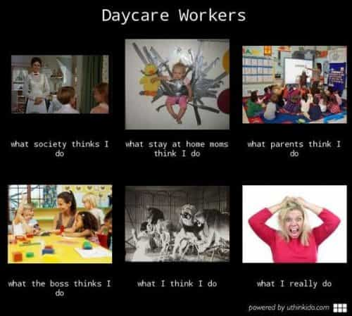
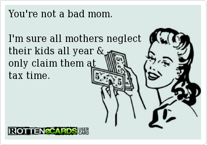

Jared is a middle-aged guy full of old-man wisdom. He's best described as a gentlemen scholar and a man among men. You can read his writing at his site: Legends of Men


Working moms… is this anyone more vain than a mother who has prioritized her career over the care and safety over her children? No, there isn’t.
Men don’t have a choice whether to work or not. A man’s ability to provide is a prerequisite to manhood. A man may choose not to support a family, but if he can’t support a family he is no man. We don’t have a choice. Women do. And if they choose to spend their time working rather than caring for their children they choose their own vanity over the safety of those children.
According to Time magazine, daycare costs on average $198 per child per week and an after-school sitter costs $215 a week. Even if a mother has only one child the amount of money she brings home after paying for child-care is negligible. Perhaps if women were better women and dropped the whole feminist act they’d be able to find a man who could support her and wanted to. Then those women could be loving mothers. Instead, women are choosing vanity, and it results in harm to their children.
These cases exemplify that.
The people work at daycare centers don’t love other people’s children. They may like to play with children or care for children… until they stop enjoying that. Children can be tiring and annoying, especially babies. When daycare workers get tired of children or annoyed by children they neglect children.

This is a first-person account of a working mother. On her first day back at work after maternity leave, she dropped her baby off at daycare. She went back less than three hours later to check on her baby, but by then it was too late. A daycare worker was incorrectly performing CPR on her deceased child. She later learned that the baby was furiously kicking in his sleep but the daycare workers chose not to investigate. The baby was also put to sleep on his side, not on his back. Mothers who love their children don’t typically make these mistakes.
The worst part of this mother’s account was how she contemplated daycare before doing it. After daycare costs, she was barely bringing home any money. She talked about it with her partner, the androgynously named Lee, who is not identified as the baby’s father, but decided that she would keep her job at a publishing house because of the health insurance for her child.
With hindsight, we see the wisdom of her decision.
All those laws about children not being allowed left in cars alone are because of working mothers.

In this first example, 35-year-old Karen Osorio-Martinez forgot about her 15-month-old baby, Sofia Aveiro, because she was running late for work. The baby was in the backseat of the car but the mother hurried to work as a scientist at Proctor & Gamble instead of going to the daycare just five minutes away. The baby forgotten in the backseat died due to heat.
Her husband’s name was Henrique Aveiro. Karen didn’t take her husband’s name. This is a signal of her vanity. She neglected her family because her job as a scientist and her individual identity was so important to her.
In another example of women loving their careers so much they’ll forget about their babies in the car, 38-year-old Nicole Engler of Oregon left her 21-month-old baby in the car while she went to work as, you guessed it, a pediatric nurse. The baby had passed away by the time she realized it was in the car when she left work for the day.
But the worst part of that story is what happened at lunchtime. She went out to the car to get some money to buy lunch at a coffee shop and still didn’t remember her baby in the backseat. Then she talked about the baby at the coffee and still didn’t remember the baby.
Needless to say, if these mothers were at home with their children these deaths could’ve been avoided.
Again, daycare workers care for your children until they don’t want to. Then they don’t really care about your children as long as they’re getting your money.
In this example, a woman ran a daycare out of her home. Her brother was the handyman there. He’s also a child molester. Years ago a mother told the daycare owner that the handyman molested her daughter. The owner said she would fire the handyman. But because the handyman is her brother, she didn’t. The sibling duo was finally arrested after another mother of a seven-year-old girl went to the police.
In the most sickening example yet, a woman working at a daycare admitted to raping four children. Her boyfriend was in prison for possession of child pornography. He told her to sexually abuse children and photograph it and send him the images and videos so that he could masturbate in prison. And she did it.

There she is, the child-rapist with whom mothers left their children, and the pedophile she loves.
When young women decide to get knocked up by bad boys rather than save themselves for a good man they have to pay for daycare themselves. It’s a safe bet they’ll pick the cheapest daycares they can, which don’t do background checks on their workers. And this is what happens as a result.
Is it worth it, the empowered lifestyle?
I can hear it now, “But some women have to work because…” Sure they do. “But those are the extremes.” Sure they are. Women have to use daycare because our individualist, feminist, post-industrial culture tells everyone they can do whatever they want. To young women that means sleeping around with bad boys or pursuing some career. Children won’t get in the way of their lifestyle, even if it means death or sexual abuse.
The purpose of this was not to blame individuals. I think those mothers learned a lesson too late. The purpose of this article is to highlight what happens to children when we encourage women to work rather than do the most important and noble thing a woman can do, raise the next generation.
For more from Jared Trueheart on the roles of men and women in literature and film check out his writing at Legends of Men.
Read More:Why Women Stopped Having Children